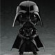

小红花队
本作由DICE洛杉矶分部开发，《战地》系列的资深制作人也在这个团队中。《星球大战：前线》将于2015年和电影版同步面世。
《星球大战：前线》系列最大的特色是将《星球大战》电影中的角色、车辆和武器融合到了一起（类似于EA的《战地》系列那种游戏模式）。
>注：Pandemic Studios制作的原版《星球大战：前线》在2004年9月18日由LucasArts发行，游戏以以多人对战为主，游戏方式类似《战地1942》，每场战斗的地图上都存在一些关键点，能占领全部关键点的一方将获得胜利。